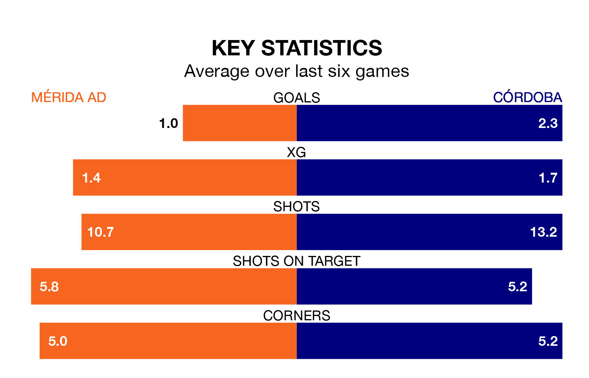

Córdoba visit Mérida AD at the Estadio Romano on late Saturday on the back of five consecutive wins in Primera Division RFEF Group 2.
Córdoba have picked up 16 points from their last six games, and they face a Mérida AD side who have lost their last two matches, and collected 10 points from the last possible 18.
With 54 goals in 29 games so far this season, Córdoba are the league's second-highest scorers with 1.9 goals per game. And they are conceding fewer than average, letting in 25 goals at a rate of 0.9 per game.
Mérida AD, meanwhile, are below average scorers, with 0.8 goals per game, compared to a league average of 1.1. They have conceded 1.2 goals per game.
The visitors are second in the table after 29 games, of which they have won 18 and drawn six, earning 60 points.
The home side are 14 places behind Córdoba in 16th, with eight wins and seven draws putting them on 31 points.
In Carlos Marín Tomás, Córdoba can rely on one of the league's safest pair of hands. He has kept 10 clean sheets in his 21 appearances this season, and only one other 'keeper – Recreativo de Huelva's Rubén Ramos González – has been able to prevent the opposition scoring on more occasions in Primera Division RFEF Group 2.
In Mérida AD's net, Juan Palomares Pulpillo has four clean sheets in 16 games. He has conceded a goal every 80 minutes, 70% more often than the 135 minutes between goals for Marín Tomás.
In the last 10 years, Mérida AD and Córdoba have played each other on six occasions. Mérida AD won one of them, Córdoba three, and they drew twice.
On average, Mérida AD scored 0.7 goals and Córdoba 1.3 in those matches.
Their last meeting was on October 14, when Córdoba won 2-1 at home.
Mérida AD's last match was on Sunday, a 3-0 loss against Recreativo de Huelva.
Córdoba beat San Fernando CD 1-0 last time out, on March 23, with José Luis Zalazar Martínez on the scoresheet.
Updated: 12:39 (UTC), 26/03/24